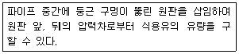
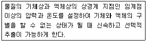

식품산업기사 (2019-03-03 기출문제)
1과목: 식품위생학
1. 식품첨가물의 구비 조건으로 옳지 않은 것은?
- 체내에 무해하고 축적되지 않아야 한다.
- 식품의 보존효과는 없어야 한다.
- 이화학적 변화에 안정해야 한다.
- 식품의 영양가를 유지시켜야 한다.
(정답률: 89%)

2. 식품공업에 있어서 폐수의 오염도를 판명하는데 필요치 않는 것은?
- DO
- BOD
- WOD
- COD
(정답률: 88%)
3. 식품 중 진드기류의 번식 억제방법이 아닌 것은?
- 밀봉 포장에 의한 방법
- 습도를 낮추는 방법
- 냉장 보관하는 방법
- 30℃ 정도로 가열하는 방법
(정답률: 78%)
4. 수돗물의 염소 소독 중 염소와 미량의 유기물질과의 반응으로 생성될 수 있는 발암성 물질은?
- benzopyrene
- nitrosoamine
- toluene
- trihalomethane
(정답률: 63%)
5. 실험물질을 사육 동물에 2년 정도 투여하는 독성 실험 방법은?
- LD50
- 급성독성실험
- 아급성독설실험
- 만선독성실험
(정답률: 86%)
6. 식품위생분야 종사자 등의 건강진단규칙에 의한 연 1회 정기 건강진단 항목이 아닌 것은?
- 성병
- 장티푸스
- 폐결핵
- 전염성 피부질환
(정답률: 90%)
7. 다음 중 우리나라에서 허용된 식품첨가물은?
- 롱가리트
- 살리실산
- 아우라민
- 구연산
(정답률: 91%)
8. 보툴리누스균에 의한 식중독이 가장 일어나기 쉬운 식품은?
- 유방염에 걸린 소의 우유
- 분뇨에 오염된 식품
- 살균이 불충분한 통조림 식품
- 부패한 식육류
(정답률: 91%)
9. 식품 포장재로부터 이행 가능한 유해 물질이 잘못 연결된 것은?
- 금속포장재 – 납, 주석
- 요업 용기 – 첨가제, 잔존 단위체
- 고무마개 – 첨가제
- 종이포장재 - 착색제
(정답률: 60%)
10. 민물고기를 섭취한 일이 없는데도 간흡충에 감염되었다면 이와 가장 관계가 깊은 감염 경로는?
- 채소 생식으로 인한 감염
- 가재요리 섭취로 인한 감염
- 쇠고기 생식으로 인한 감염
- 민물고기를 요리한 도마를 통한 감염
(정답률: 90%)
11. 곰팡이의 대사산물 중 사람에게 질병이나 생리 작용의 이상을 유발하는 물질이 아닌 것은?
- aflatoxin
- citrinin
- patulin
- saxitoxin
(정답률: 59%)
12. 다음 물질 중 소독 효과가 거의 없는 것은?
- 알코올
- 석탄산
- 크레졸
- 중성세제
(정답률: 82%)
13. 세균성 식중독과 비교하였을 때, 경구감염병의 특징에 해당하는 것은?
- 발병은 섭취한 사람으로 끝난다.
- 잠복기가 짧아 일반적으로 시간 단위로 표시한다.
- 면역성이 없다.
- 소량의 균에 의하여 감염이 가능하다.
(정답률: 74%)
14. 일반적으로 열경화성 수지에 해당되는 플라스틱 수지는?
- 폴리에틸렌 (polyethylene)
- 폴리프로필렌 (polyproplene)
- 폴리아미드 (polyamide)
- 요소(urea)수지
(정답률: 62%)
15. 대부분의 식중독 세균이 발육하지 못하는 온도는?
- 37℃이하
- 27℃이하
- 17℃이하
- 3.5℃이하
(정답률: 84%)
16. 식품오염에 문제가 되는 방사능 핵종이 아닌 것은?
- Sr-90
- Cs-137
- I-131
- C-12
(정답률: 86%)
17. 우유의 저온살균이 완전히 이루어졌는지를 검사하는 방법은?
- 메틸렌블루(Methylene blue) 환원 시험
- 포스파테이즈(Phosphatase) 검사법
- 브리드씨법(Breed's method)
- 알코올 침전 시험
(정답률: 60%)
18. 어패류가 주요 원인 식품이며 3%의 식염배지에서 생육을 잘하는 식중독균은?
- Staphylococcus aureus
- Clostridium botulinum
- Vibrio parahaemolyticus
- Salmonella enteritidis
(정답률: 85%)
19. 식품의 보존료 중 잼류, 망고처트니, 간장, 식초 등에 사용이 허용되었으나, 내분비 및 생식독성 등의 안전성이 문제가 되어 2008년 식품첨가물 지정이 취소된 것은?
- 데히드로초산
- 프로피온산
- 파라옥시 안식향산 프로필
- 파라옥시 안식향산 에틸
(정답률: 65%)
20. 미생물학적 검사를 위해 고형 및 반고형인 검체의 균질화에 사용하는 기계는?
- 쵸펴 (Chopper)
- 원심분리기 (centrifuge)
- 균질기 (stomacher)
- 냉동기 (freezer)
(정답률: 82%)
2과목: 식품화학
21. 식품을 장기간 보관할 때 고유의 냄새가 없어지게 되는 주된 이유는?
- 식품의 냄새성분은 휘발성이기 때문이다
- 식품의 냄새성분은 친수성이기 때문이다
- 식품의 냄새성분은 소수성이기 때문이다
- 식품의 냄새성분은 비휘발성이기 때문이다
(정답률: 86%)
22. 다음의 식품 중 소성체의 특성을 나타내는 것은 어느 것인가?
- 가당연유
- 생크림
- 물엿
- 난백
(정답률: 76%)
23. 지방 1g 중에 oleic acid 20mg이 함유되어 있을 경우의 산가는? (단, KOH의 분자량은 56이고, oleic acid C18H34O2의 분자량은 282이다.)
- 3.97
- 0.0397
- 100.7
- 1.007
(정답률: 51%)
24. 다음 중 이중결합이 2개인 지방산은?
- 팔미트산(palmitic acid)
- 올레산(oleic acid)
- 리놀레산(linoleic acid)
- 리놀렌산(linolenic acid)
(정답률: 62%)
25. 딸기, 포도, 가지 등의 붉은 색이나 보라색이 가공, 저장 중 불안정하여 쉽게 갈색으로 변하는데 이 색소는?
- 엽록소
- 카로티노이드계
- 플라보노이드계
- 안토시아닌계
(정답률: 79%)
26. 과당(fructose)에 대한 설명으로 틀린 것은?
- 과당은 포도당과 함께 유리 상태로 과일, 벌꿀 등에 함유되어 있다.
- 과당은 환원당이며, α형과 β형의 두 가지 이성체가 존재한다.
- 설탕에 비하여 단맛이 약하다.
- 물에 대한 용해도가 커서 과포화되기 쉽다.
(정답률: 84%)
27. 식품의 효소적 갈변을 방지하는 물리적 방법과 가장 거리가 먼 것은?
- 공기주입
- 데치기
- 산첨가
- 저온 저장
(정답률: 62%)
28. 단백질의 변성에 대한 설명으로 틀린 것은?
- 단백질의 변성은 등전점에서 가장 잘 일어난다.
- 단백질의 열 응고 온도는 대개 60~70℃이다.
- 육류 단백질의 동결변성은 –5 ~ -1℃에서 가장 잘 일으킨다.
- 콜라겐은 가열에 의해 불용성의 젤라틴으로 된다.
(정답률: 67%)
29. α형 이성질체보다 β형 이성질체의 단맛이 강한 당류는?
- 과당
- 맥아당
- 설탕
- 포도당
(정답률: 69%)
30. 함황 아미노산이 아닌 것은?
- Lysine
- Cysteine
- Methionine
- Cystine
(정답률: 63%)
31. 단백질을 등전점과 같은 pH 용액에서 전기 영동을 하면 어떻게 이동하는가?
- 전혀 움직이지 않는다.
- (+)극으로 빠르게 움직인다.
- (-)극으로 빠르게 움직인다.
- (-)극으로 움직이다가 다시 (+)극으로 움직인다.
(정답률: 64%)
32. 향기 성분으로 알리신 (allicin)이 들어 있는 것은?
- 마늘
- 사과
- 고추
- 무
(정답률: 88%)
33. 요오드 정색반응에 청색을 나타내는 덱스트린(detrin)은?
- 아밀로덱스트린(amylodextrin)
- 에리스로덱스트린(erythrodextrin)
- 아크로덱스트린(achrodextrin)
- 말토덱스트린(maltodextrin)
(정답률: 77%)
34. 유지의 산패를 측정하는 화학적 성질과 거리가 먼 것은?
- 과산화물가
- 요오드가
- 산가
- 폴렌스케가
(정답률: 78%)
35. 식품의 텍스쳐(texture)를 나타내는 변수와 가장 거리가 먼 것은?
- 경도(hardness)
- 굴절률(refractive index)
- 탄성(elasticity)
- 부착성(adhesiveness)
(정답률: 76%)
36. 일반적으로 효소의 활성에 크게 영향을 미치지 않는 것은?
- 공기
- 온도
- pH
- 기질의 양
(정답률: 57%)
37. 단백질의 열변성에 영향을 주는 요인이 아닌 것은?(오류 신고가 접수된 문제입니다. 반드시 정답과 해설을 확인하시기 바랍니다.)
- 수분
- 전해질의 존재
- 색깔
- 수소이온 농도
(정답률: 77%)
38. 단백질의 등전점에서 나타나는 현상이 아닌 것은?
- 기포력이 최소가 된다
- 용해도가 최소가 된다
- 팽윤이 최소가 된다
- 점도가 최소가 된다
(정답률: 39%)
39. 가공육의 색의 변화에 대한 설명으로 틀린 것은?
- 가공육은 저장기간이 길어지면서 육색의 변화가 문제가 된다.
- 미오글로빈과 옥시미오글로빈은 육색을 불게 하는 색소이다.
- 아질산염은 메트미오글로빈을 형성시켜 육색을 붉게 유지시킨다.
- 가열을 오래하면 포피린류가 생성되어 갈색 등으로 변한다.
(정답률: 63%)
40. 분산상과 분산매가 모두 액체인 식품은?
- 맥주
- 우유
- 전분액
- 초콜릿
(정답률: 75%)
3과목: 식품가공학
41. 유지에 수소를 첨가하는 목적과 거리가 먼 것은?
- 색깔을 개선한다
- 식품안정성을 좋게 한다
- 식품의 냄새, 풍미를 개선한다
- 유지의 유통기한을 연장시킨다
(정답률: 53%)
42. 어패류의 맛에 관여하는 함질소 엑스성분이 아닌 것은?
- TMAO
- betaine
- 핵산관련물질
- 글리세라이드
(정답률: 52%)
43. 두부제조와 가장 밀접한 단백질은?
- 글루테닌
- 글리아딘
- 글리시닌
- 카제인
(정답률: 72%)
44. 잼 제조 시 농축 공정에서 젤리점 판정법이 아닌 것은?
- 알코올 침전법
- 컵 테스트 (cup test)
- 스푼 테스트 (spoon test)
- 온도계법
(정답률: 77%)
45. 햄과 베이컨의 제조공정에서 간먹이기에 사용되는 일반적인 재료가 아닌 것은?
- 소금
- 식초
- 설탕
- 향신료
(정답률: 78%)
46. 프로바이오틱스(probiotics)에 대한 설명으로 틀린 것은?
- 대부분의 프로바이오틱스는 유산균들이며 일부 Bacillus 등을 포함하고 있다.
- 과량으로 섭취하면 heterofermentation을 하는 균주에 의한 가스 발생 등으로 설사를 유발할 수 있다.
- 프로바이오틱스가 장 점막에서 생육하게 되면 장내의 환경을 중성으로 만들어 장의 기능을 향상시킨다.
- 프로바이오틱스가 장내에 도달하여 기능을나타내려면 하루에 108~1010 CFU 정도를 섭취하여야 한다. (단, 건강기능식품 공전에서 정하는 프로바이오틱스에 해당하는 경우이며, 새로 개발된 균주의 경우 섭취량이 달라질 수 있다)
(정답률: 60%)
47. 식품 등의 표시기준에 따라 제조일과 제조 시간을 함께 표시하여야 하는 즉석섭취 및 편의식품류는?
- 어육연제품
- 식용유지류
- 도시락
- 통, 병조림
(정답률: 87%)
48. 식품을 포장하는 목적과 거리가 먼 것은?
- 취급을 편리하게 하기 위하여
- 상품가치를 향상시키기 위하여
- 내용물의 맛을 변화시키기 위하여
- 식품의 변패를 방지하기 위하여
(정답률: 89%)
49. 장류의 원료에 대한 설명으로 옳은 것은?
- 된장용으로는 찹쌀이 가장 좋다.
- 장류용 보리는 도정 (겨층 제거)한 것을 사용한다.
- 된장용 소금은 3~4 등급의 소금을 사용한다.
- 장류용 물은 불순물이 많아도 상관 없다.
(정답률: 74%)
50. 면 제조 시 사용하는 견수의 역할이 아닌 것은?
- 약간 노란색을 띠게 한다.
- 중화면에 특유한 풍미를 부여한다.
- 밀 녹말의 노화를 촉진하여 준다.
- 면의 식감을 쫄깃하게 한다.
(정답률: 81%)
51. 비중계에 대한 설명으로 틀린 것은?
- 디지털 비중계 : 정밀하고 간편하게 비중을 측정할 수 있다.
- 경보오메계 : 비중이 물보다 가벼운 액체에 사용한다.
- 브릭스 비중계 : 비중을 측정한 후 온도 4℃로 보정한다.
- 중보오메계 : 비중이 물보다 무거운 액체에 사용한다.
(정답률: 79%)
52. 열이동과 물질이동의 원리가 동시에 적용되는 단위조작이 아닌 것은?
- 건조
- 농축
- 증류
- 포장
(정답률: 79%)
53. 달걀 가공품에 대한 설명으로 틀린 것은?
- 액란 (liquid egg)은 전란액, 난백액, 난황액이 있다.
- 피단(pidan)은 달걀 속에 소금과 알칼리성 염류를 침투시켜 노른자와 흰자를 응고, 숙성시킨 조미달걀이다.
- 마요네즈는 노른자위의 유화력을 이용한 대표적인 달걀 가공품이다.
- 건조란은 껍질 째 탈수 건조시킨 것으로, 아이스크림, 쿠키 등에 사용되고 있다.
(정답률: 78%)
54. 과실, 채소 가공 시 데치기 (blanching)의 목적과 거리가 먼 것은?
- 박피를 쉽게 한다.
- 맛과 조직감을 좋게 한다.
- 변색과 변질을 방지한다.
- 가열 살균 시 부피가 줄어드는 것을 방지한다.
(정답률: 49%)
55. 식품이 나타내는 수증기압이 0.98이고 해당 온도에서 순수한 물의 수증기압이 1.0일 때 수분활성도 (Aw)는?
- 0.02
- 0.98
- 1.02
- 1.98
(정답률: 76%)
56. 쌀의 도정률이 작은 것에서 큰 순서로 옳게 나열 한 것은?
- 주조미 < 백미 < 5분도미 < 현미
- 주조미 < 5분도미 < 백미 < 현미
- 현미 < 5분도미 < 백미 < 주조미
- 현미 < 백미 < 5분도미 < 주조미
(정답률: 50%)
57. 우유의 지방정량법이 아닌 것은?
- Gerber법
- Kjeldahl법
- Babcock법
- Roese-Gottlieb법
(정답률: 62%)
58. 식품저장을 위한 염장의 삼투작용에 대한 설명이 틀린 것은?
- 미생물의 생육 억제에 효과가 있다.
- 식품 내외의 삼투압차에 의하여 침투와 확산의 두 작용이 일어난다.
- 소금에 의해 식품의 보수성이 좋아진다.
- 높은 삼투압으로 미생물 세포는 원형질 분리가 일어난다.
(정답률: 52%)
59. 고형분 함량이 50%인 식품 5kg을 농축하여 고형분 함량 80%로 만들려고 한다. 제거해야 할 물의 양은?
- 1.324 kg
- 1.5⑤ kg
- 1.625 kg
- 1.875 kg
(정답률: 39%)
60. 유지의 추출용제로 적당하지 않은 것은?
- hexane
- acetone
- HCL
- CCl4
(정답률: 56%)
4과목: 식품미생물학
61. 세균의 그람 염색에 사용되지 않는 것은?
- Crystal violet
- Lugol 액
- Safranin 액
- Congo red 액
(정답률: 59%)
62. 청국장 발효균은?
- Aspergillus oryzae
- Bacillus natto
- Rhizopus delimer
- Zygosaccharomyces rouxii
(정답률: 82%)
63. 세균의 편모와 가장 관련이 깊은 것은?
- 생식기관
- 운동기관
- 영양축적기관
- 단백질합성기관
(정답률: 79%)
64. Pichia 속과 Hansenula속에 대한 설명으로 옳은 것은?
- 모두 질산염을 자화한다.
- Pichia속만 질산염을 자화한다.
- Hansenula 속만 질산염을 자화한다.
- 모두 질산염을 자화하지 못한다.
(정답률: 64%)
65. 미생물 대사 중 pyruvic acid에서 TCA cycle로 들어갈 때 필요로 하는 물질은?
- Acetyl CoA
- NADP
- FAD
- ATP
(정답률: 76%)
66. 균내에 존재하는 효소를 추출하기 위한 균체 파괴법에 해당하지 않는 것은?
- 기계적 마쇄법
- 초음파 마쇄법
- 자기 소화법
- 염석 및 투석법
(정답률: 45%)
67. 그람 양성균 세포벽의 특징이 아닌 것은?
- 그람 음성균에 비해 세포벽이 얇다.
- Peptidoglycan을 가지고 있다.
- 지질다당류의 외막은 없다.
- teichoic acid가 함유되어 있다.
(정답률: 59%)
68. 에탄올 1kg이 전부 초산발효가 될 경우 생성되는 초산의 양은 약 얼마인가?
- 667g
- 767g
- 1204g
- 1304g
(정답률: 38%)
69. 박테리오파지의 숙주는?
- 조류
- 곰팡이
- 효모
- 세균
(정답률: 76%)
70. 제빵에 주로 사용하는 균주는?
- Acetobacter aceti
- Saccharomyces oleaceus
- Saccharomyces cerevisiae
- Acetobacter xylinum
(정답률: 74%)
71. 유리 산소의 존재 유무에 관계없이 생육이 가능한 균은?
- 편성호기성균
- 편성혐기성균
- 통성혐기성균
- 미호기성균
(정답률: 73%)
72. 포도주의 주 발표균은?
- Saccharomyces ellipsoideus
- Saccharomyces sake
- Saccharomyces sojae
- Saccharomyces coreanus
(정답률: 70%)
73. 균사의 끝에 중축이 생기고 여기에 포자낭을 형성하여 그 속에 포자낭포자를 내생하는 곰팡이는?
- Aspergillus 속
- Neurospora 속
- Absidia 속
- Penicillium 속
(정답률: 38%)
74. 겨울철에 살균하지 않은 생유에 발생하면 쓴 맛이 나게 하며, 단백질분해력이 강한 균은?
- Erwinia carotova
- Gluconobacter oxydans
- Enterobacter aerogenes
- Pseudomonas fluorescens
(정답률: 61%)
75. 전자 및 전리 방사선이 미생물을 살균시키는 주요 원리는?
- 효소의 합성
- 탄수화물의 분해
- 고온 발생
- DNA 파괴
(정답률: 75%)
76. 하등미생물 중 형태의 분화 정도가 가장 팡선 균사상의 원핵 생물로 토양에 주로 존재하며 다양한 항생물질을 생산하는 미생물은?
- 방선균
- 효모
- 곰팡이
- 젖산균
(정답률: 75%)
77. 포자낭병의 밑 부분에 기근을 형성하는 미생물속은?
- Rhizopus 속
- Mucor 속
- Aspergillus 속
- Penicillum 속
(정답률: 64%)
78. 통기성의 필름으로 포장된 냉장 포장육의 부패에 관여하지 않는 세균은?
- Pseudomonas 속
- Clostridium 속
- Moraxella 속
- Acinetobacter 속
(정답률: 60%)
79. 치즈 제조 시에 필요한 응유효소인 rennet의 대용 효소를 생산하는 곰팡이는?
- Penicillium chrysogenum
- Rhizopus japonicus
- Absidia ichtheimi
- Mucor pusillus
(정답률: 35%)
80. 세균의 생육에 있어 균체의 세대기간 (generation time)이 일정하고 생리적 활성이 최대인 것은?
- 유도기 (lag phase)
- 대수기 (logarithimic phase)
- 정상기 (stationary phase)
- 사멸기 (death phase)
(정답률: 63%)
5과목: 식품제조공정
81. Cl. botulinum (D121.1=0.25분)의 포자가 오염되어 있는 통조림을 121.1℃에서 가열하여 미생물 수를 10대수 cycle만큼 감소시키는데 걸리는 시간은?
- 2.5분
- 25분
- 5분
- 10분
(정답률: 67%)
82. 식품원료를 무게, 크기, 모양, 색깔 등 여러 가지 물리적 성질의 차이를 이용하여 분리하는 조작은?
- 선별
- 교반
- 교질
- 추출
(정답률: 84%)
83. Bacillus stearothermophillus 포자를 열처리하여 생존균의 농도를 초기의 1/100000 만큼 감소시키는데 110℃에서는 50분, 125℃에서는 5분이 각각 소요되었다. 이 균의 z 값은?
- 15℃
- 10℃
- 5℃
- 1℃
(정답률: 51%)
84. 방사선 조사에 대한 설명 중 틀린 것은?
- 방사선 조사 시 식품의 온도상승은 거의 없다.
- 처리 시간이 짧아 전 공정을 연속적으로 작업할 수 있다.
- 10kGy 이상의 고 선량조사에도 식품성분에 아무런 영향을 미치지 않는다.
- 방사선 에너지가 식품에 조사되면 식품 중의 일부 원자는 이온이 된다.
(정답률: 77%)
85. 증발 농축이 진행 될수록 용액에 나타나는 현상으로 틀린 것은?
- 농도가 상승한다.
- 비점이 낮아진다.
- 거품이 발생한다.
- 점도가 증가한다.
(정답률: 71%)
86. Extruder 기계를 통한 압출 공정에서 나타나는 식품재료의 물리, 화학적 변화가 아닌 것은?
- 단백질의 변성
- 효소의 활성화
- 갈색화 반응
- 전분의 호화
(정답률: 39%)
87. 아래의 설명에 해당하는 것은?

- 벤츄리 유량계
- 오리피스 유량계
- 피토관
- 로터미터
(정답률: 66%)
88. 밀 제분 시 원료 밀을 롤러(roller)를 사용하여 부수면서 배유부와 외피를 분리하는 공정은?
- 가수공정
- 순화공정
- 훈증공정
- 조쇄공정
(정답률: 83%)
89. 동결건조에 대한 설명으로 옳지 않은 것은?
- 식품 조직의 파괴가 적다
- 주로 부가가치가 높은 식품에 사용한다.
- 제조단가가 적게 든다.
- 향미 성분의 보존성이 뛰어나다.
(정답률: 73%)
90. 감귤통조림에서 하얀 침전물이 생성되는 현상을 방지하기 위한 방법이 아닌 것은?
- 박피에 사용된 알칼리처리 시간의 단축
- 시럽 중 산성과즙 첨가
- Hesperidinase 효소 처리
- 원료감귤의 아황산가스 처리
(정답률: 51%)
91. 시유 제조에서 균질기를 사용하는 목적이 아닌 것은?
- 크림 층의 분리 방지
- 소화 흡수율 증가
- 우유 속에 지방의 균질 분산
- 카제인 (casein)의 분리 용이
(정답률: 63%)
92. 다단 추출기로 스크루 컨베이어를 갖는 2개의 수직형 실린더 탑으로 구성된 연속추출기는?
- 힐데브란트 추출기
- 볼만 추출기
- 배터리 추출기
- 로토셀 추출기
(정답률: 62%)
93. 열교환기의 판수를 변화시킴으로써 증발능력을 용이하게 조절할 수 있으며 소요면적이 작고 쉽게 해체할 수 있는 장점이 있는 플레이트식 증발기의 구성장치에 해당하지 않는 것은?
- 응축기
- 분리기
- 와이퍼
- 원액펌프
(정답률: 60%)
94. 아래의 추출방법을 식품에 적용할 때 용매로 주로 사용하는 물질은?

- 산소
- 이산화탄소
- 질소가스
- 아르곤가스
(정답률: 67%)
95. 습식 세척기에 해당하지 않는 것은?
- 담금 탱크
- 분무 세척기
- 자석 분리기
- 초음파 세척기
(정답률: 73%)
96. 일정한 모양을 가진 틀에 식품을 담고 냉각 혹은 가열 등의 방법으로 고형화시키는 성형방법은?
- 주조성형
- 압연성형
- 압출성형
- 절단성형
(정답률: 59%)
97. 다음 중 식품에 열을 전달하는 방식으로 전도를 이용하는 건조장치는?
- 터널 건조기 (tunnel dryer)
- 트레이 건조기 (tray dryer)
- 빈 건조기(bin dryer)
- 드럼 건조기(drum dryer)
(정답률: 59%)
98. 바람을 불어 넣어 비중 차이를 이용해 식품 원료에 혼입된 흙, 잡초 등의 이물질을 분리하는 장치는?
- 자석식 분리기
- 체 분리기
- 기송식 분리기
- 마찰 세척기
(정답률: 77%)
99. 식품 제조 공정에서 거품을 소멸시키는 목적으로 사용된는 첨가물은?
- 규소수지
- n-핵산
- 유동파라핀
- 규조토
(정답률: 67%)
100. 가늘고 긴 원통모양의 보울 (bowl)이 축에 매달려 고속으로 회전하여 가벼운 액체는 안쪽, 무거운 액체는 벽 쪽으로 이동하도록 분리시키는 기계는?
- 관형 원심분리기
- 원판형 원심분리기
- 노즐형 원심분리기
- 컨베이어형 원심분리기
(정답률: 59%)